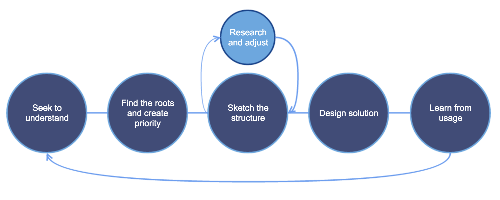

"You are not your user."
Understanding user needs, getting to the root of their frustrations and validating solutions with their experiences and expectations are all part of my creative process.

Survey Infographic
Agora Inc. 2015
In 2015, our sales teams expressed the need for a new dashboard to track and update their call metrics and daily lists. Poor visibility into call metrics was leading to poor call volume, duplicated work and loss of revenue...
To begin, I created and published a survey to 10 randomly selected participants, reflecting the ratio of our inbound and outbound sales teams. The goal was simple: understand their critical tasks, goals, frustrations and shortcuts to help us find the roots of the roadblocks.
Below is an example of an infographic I made to highlight the results of the survey for a board meeting with our CRM stakeholders.

User Personas
Agora Inc. 2015
Understanding the roots of our telesales team frustrations was only the beginning of helping us understand a very niche and critical role in our organization...
Creating personas allowed us to start with the ocean, and hone in on a beach. By conducting group interviews as well as participating in shadow-sessions, we were able to identify two very unique personas for our core user group.
This persona document is an example of one presented to our C-level executives to help them understand more individual needs of our particular teams to help guide our project direction and scope.

Mental Model
Agora Inc. 2015
During the development, I realized that our team needed more clarity on the most tedious and duplicative tasks being performed daily by our sales team...
Reviewing old research notes, making some quick phone calls and walking-through the tasks identified by our user groups I quickly drew this sketch that helped me pinpoint exactly which points in the process involved the most steps/ouside systems. This allowed us to develop custom APIs to those systems to help carry some of the information from one system to another.
This 'mental model' is the sketch I came up with to help clarify the API requirements.